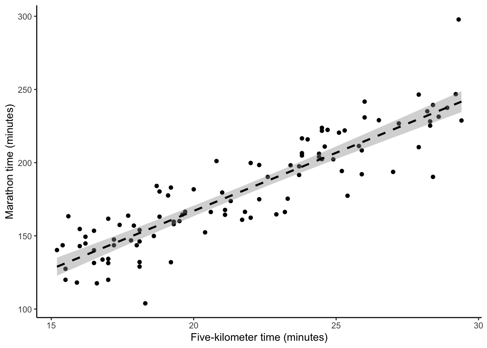
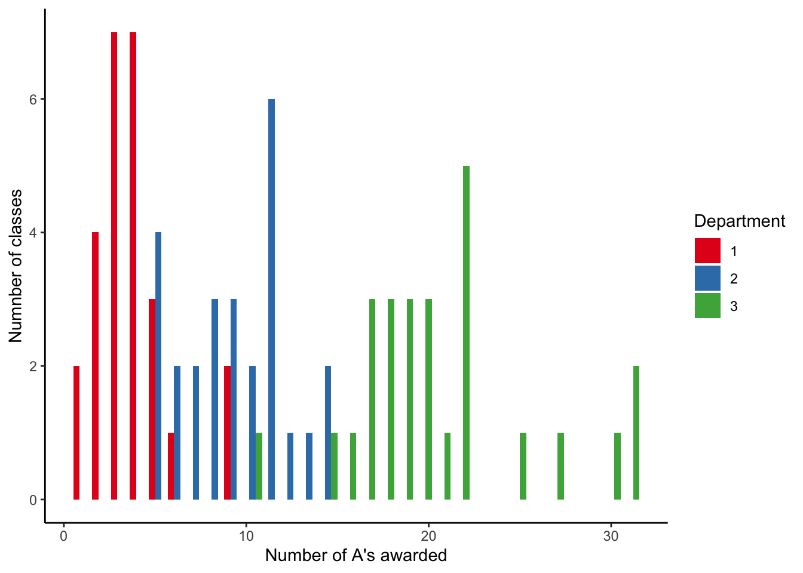
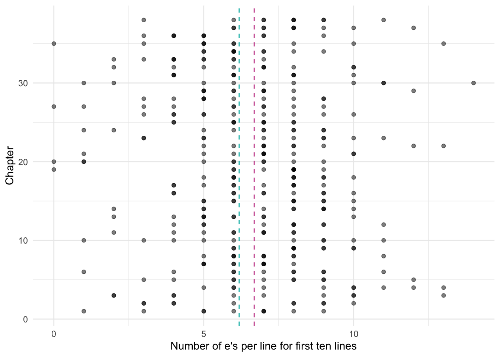
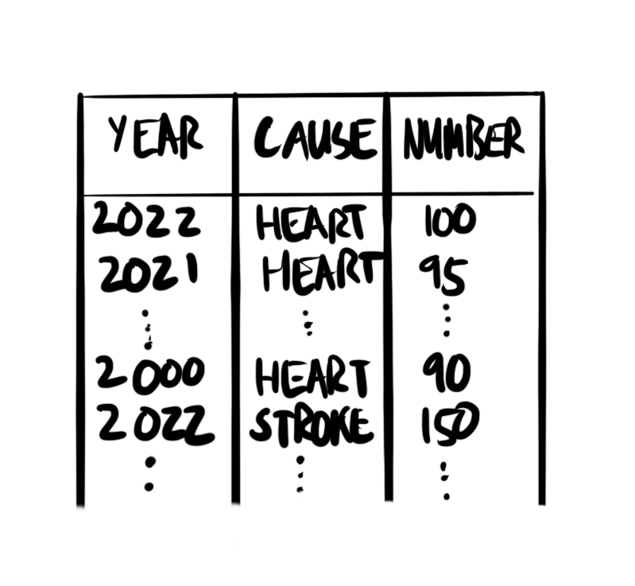
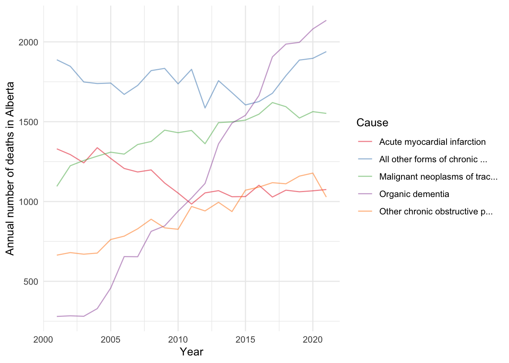

Read Regression and Other Stories, Chapters 6 “Background on regression modeling”, 7 “Linear regression with a single predictor”, 10 “Linear regression with multiple predictors”, 13 “Logistic regression”, and 15 “Other generalized linear models”, (Gelman, Hill, and Vehtari 2020)
Read An Introduction to Statistical Learning with Applications in R, Chapters 3 “Linear Regression”, and 4 “Classification”, (James et al. 2021)
Read We Gave Four Good Pollsters the Same Raw Data. They Had Four Different Results, (Cohn 2016)
Read Why most published research findings are false, (Ioannidis 2005)
Read Machine learning is going real-time, (Huyen 2020)
Watch Democratizing R with Plumber APIs, (Blair 2019)
Linear models are a key component of modelling and enable us to consider a wide range of circumstance. Simple and multiple linear regression refer to the situation in which we consider some dependent variable as a function of one, and multiple, independent variables, respectively. Logistic and Poisson regression change the nature of the dependent variable, with it being a binary, and a count, respectively.
We are concerned with two different aspects: prediction and inference. We use machine learning approaches for the former, and Bayesian methods for the latter.
Finally, putting a model into production requires a different set of skills to building it. This includes a familiarity with a cloud provider and the ability to create an API.
Linear models have been around for a long time. For instance, speaking about the development of least squares, which is one way to fit linear models, in the 1700s, Stigler (1986, 16) describes how it was associated with foundational problems in astronomy, such as determining the motion of the moon and reconciling the non-periodic motion of Jupiter and Saturn. The fundamental issue at the time with least squares was that of hesitancy to combine different observations. Astronomers were early to develop a comfort with doing this because they had typically gathered their observations themselves and knew that the conditions of the data gathering were similar, even though the value of the observation was different. It took longer for social scientists to become comfortable with linear models, possibly because they were hesitant to group together data they worried were not alike. In this one sense, astronomers had an advantage because they could compare their predictions with what happened whereas this was more difficult for social scientists (Stigler 1986, 163).
Francis Galton, mentioned in Chapter 10, and others of his generation, some of whom were eugenicists, used linear regression in earnest in the late 1800s and early 1900s. Binary outcomes quickly became of interest and needed special treatment, leading to the development and wide adaption of logistic regression and similar methods in the mid-1900s (Cramer 2003). The generalized linear model framework came into being, in a formal sense, in the 1970s with Nelder and Wedderburn (1972) who brought this all together. Generalized linear models (GLMs) broaden the types of outcomes that are allowed. We still model outcomes as a linear function, but we are no longer constrained by the normal distribution. The outcome can be anything in the exponential family, and popular choices include the logistic distribution, and the Poisson distribution. A further generalization of GLMs is generalized additive models (GAMs) where we broaden the structure of the explanatory side. We still explain the dependent variable as an additive function of various bits and pieces, but those bits and pieces can be functions. This framework, in this way, came about in the 1990s, with Hastie and Tibshirani (1990).
Shoulders of giants
Dr Robert Tibshirani is Professor in the Departments of Statistics and Biomedical Data Science at Stanford University. After taking a PhD in Statistics from Stanford University in 1981, he joined the University of Toronto as an assistant professor. He was promoted to full professor in 1994 and moved to Stanford in 1998. He made fundamental contributions including GAMs, mentioned above, and lasso regression, which is a way of automated variable selection and will be covered in Chapter 17. He is an author of James et al. (2021). He was awarded the COPSS Presidents’ Award in 1996 and was appointed a Fellow of the Royal Society in 2019.
When we build models, we are not discovering “the truth”. A model is not, and cannot be, a true representation of reality. We are using the model to help us explore and understand our data. There is no one best model, there are just useful models that help us learn something about the data that we have and hence, hopefully, something about the world from which the data were generated. When we use models, we are trying to understand the world, but there are enormous constraints on the perspective we bring to this. It is silly to expect one model to be universal. Further, we should not just blindly throw data into a regression model and hope that it will sort it out. “Regression will not sort it out. Regression is indeed an oracle, but a cruel one. It speaks in riddles and delights in punishing us for asking bad questions” (McElreath 2020, 162).
We use models to understand the world. We poke, push, and test them. We build them and rejoice in their beauty, and then seek to understand their limits and ultimately destroy them. It is this process that is important, it is this process that allows us to better understand the world; not the outcome. When we build models, we need to keep in mind both the world of the model and the broader world that we want to be able to speak about. To what extent does a model trained on the experiences of straight, cis, men, speak to the world as it is? It is not worthless, but it is also not unimpeachable. To what extent does the model teach us about the data that we have? To what extent do the data that we have reflect the world about which we would like to draw conclusions? We need to keep such questions front of mind.
Much of statistics was established without concern for broader implications. And that was reasonable because it was developed for situations such as astronomy and agriculture. Folks such as Fisher (1926) were able to randomize the order of fields and planting because they worked at agricultural stations. But many of the subsequent applications in the twentieth and twenty-first centuries do not have those properties. Statistics is often taught as though it proceeds through some idealized process where a hypothesis appears, is tested against some data that similarly appears, and is either confirmed or not. But that is not what happens. We react to incentives. We dabble, guess, and test, and then follow our intuition, backfilling as we need. All of this is fine. But it is not a world in which a traditional null hypothesis holds completely. This means concepts such as p-values and power lose some of their meaning. While we need to understand these foundations, we also need to be sophisticated enough to know when we need to move away from them.
Manual statistical checks are widely used in modelling. And an extensive suite of them is available. But automated testing is also important. For instance, Knutson et al. (2022) built a model of excess deaths in a variety of countries, to estimate the overall death toll from the pandemic. After initially releasing the model, which had been extensively manually checked for statistical issues and reasonableness, some of the results were re-examined and it was found that the estimates for Germany and Sweden were over-sensitive. The authors acknowledged this, and addressed the issues, but the integration of automated testing, in addition to the usual manual statistical checks, would go some way to enabling us to have more faith in the models of others.
In this chapter we begin with simple linear regression, and then move to multiple linear regression, the difference being the number of explanatory variables that we allow. We then consider logistic, Poisson, and negative binomial regression. We go through three approaches for each of these: base R, which is useful when we want to quickly use the models in EDA; tidymodels(Kuhn and Wickham 2020) which is useful when we are interested in prediction; and rstanarm(Goodrich et al. 2020) for when we are interested in inference. In general, a model is either optimized for prediction or inference. Regardless of the approach we use, the important thing to remember is that modelling in this way is just fancy averaging and reflects the dataset.
For ease of next steps in this chapter the notation for probability distributions follows Pitman (1993), the notation for frequentist statistics and machine learning follows James et al. (2021), and the notation for Bayesian statistics follows McElreath (2020).
14.2 Simple linear regression
When we are interested in the relationship between two continuous variables, say \(y\) and \(x\), we can use simple linear regression. This is based on the Normal, also called “Gaussian”, distribution, but it is not these variables themselves that are normally distributed. The shape of the Normal distribution is determined by two parameters, the mean, \(\mu\), and the standard deviation, \(\sigma\)(Pitman 1993, 94):
Here we specified 20 draws from a Normal distribution with mean of 0 and standard deviation of 1. When we deal with real data, we will not know these parameters and we want to use our data to estimate them. We can estimate the mean, \(\bar{x}\), and standard deviation, \(\hat{\sigma}_x\), with the following estimators:
Table 14.1: Estimates of the mean and standard deviation based on the simulated data
Estimated mean
Estimated standard deviation
-0.21
0.88
We should not be too worried that our estimates are slightly off (Table 14.1). We only considered 20 observations. It will typically take a larger number of draws before we get the expected shape, and our estimated parameters get close to the actual parameters, but it will almost surely happen (Figure 14.1). Wasserman (2005, 76) describes our certainty of this, which is due to the Law of Large Numbers, as “a crowning achievement in probability”.
Figure 14.1: The Normal distribution takes its familiar shape as the number of draws increases
When we use simple linear regression, we assume that our relationship is characterized by the variables and the parameters. If we have two variables, \(Y\) and \(X\), then we could characterize a linear relationship between these as (James et al. 2021, 61):
\[
Y \approx \beta_0 + \beta_1 X.
\tag{14.1}\]
Here, there are two coefficients, also referred to as parameters: the intercept, \(\beta_0\), and the slope, \(\beta_1\). In Equation 14.1 we are saying that \(Y\) will have some value, \(\beta_0\), even when \(X\) is 0, and that \(Y\) will change by \(\beta_1\) units for every one unit change in \(X\). We may then take this relationship to the data that we have to estimate these coefficients.
To make this example concrete, we will simulate some data and then discuss it in that context. We could consider the time it takes someone to run five kilometers, compared with the time it takes them to run a marathon (Figure 14.2 (a)). In the simulation we specify a relationship of 8.4, as that is roughly the ratio between the distance of a marathon and a five-kilometer run. Notice that it is the noise that is normally distributed, not the variables.
(b) With one ‘linear best-fit’ line illustrating the implied relationship

(c) Including standard errors
Figure 14.2: Simulated data of the relationship between the time to run five kilometers and a marathon
In this simulated example, we know the true values of \(\beta_0\) and \(\beta_1\). But our challenge is to see if we can use only the data, and simple linear regression, to recover them. That is, can we use \(x\), which is the five-kilometer time, to produce estimates of \(y\), which is the marathon time, and that we denote by \(\hat{y}\) (by convention, hats are used to indicate that these are, or will be, estimated values) (James et al. 2021, 61):
\[\hat{y} = \hat{\beta}_0 + \hat{\beta}_1 x.\]
This involves estimating values for \(\beta_0\) and \(\beta_1\). But how should we estimate these coefficients? Even if we impose a linear relationship there are many options because many straight lines could be drawn. But some of those lines would fit the data better than others.
One way we may define a line as being “better” than another, is if it is as close as possible to each of the \(x\) and \(y\) combinations that we know. There are a lot of candidates for how we define as close as possible, but one is to minimize the residual sum of squares. To do this we produce estimates for \(\hat{y}\) based on some guesses of \(\hat{\beta}_0\) and \(\hat{\beta}_1\), given the \(x\). We then work out how wrong, for every observation \(i\), we were (James et al. 2021, 62):
\[e_i = y_i - \hat{y}_i.\]
To compute the residual sum of squares (RSS), we sum the errors across all the points, taking the square to account for negative differences (James et al. 2021, 62):
\[\mbox{RSS} = e^2_1+ e^2_2 +\dots + e^2_n.\]
This results in one linear best-fit line (Figure 14.2 (b)), but it is worth reflecting on all the assumptions and decisions that it took to get us to this point.
Underpinning our use of simple linear regression is a belief that there is some “true” relationship between \(X\) and \(Y\), that is (James et al. 2021, 62):
\[Y = f(X) + \epsilon.\]
We are going to say that function, \(f()\), is linear, and so for simple linear regression (James et al. 2021, 62):
\[\hat{Y} = \beta_0 + \beta_1 X + \epsilon.\]
We do not, and cannot, know the “true” relationship between \(X\) and \(Y\). All we can do is use our sample to estimate it. But because our understanding depends on that sample, for every possible sample, we would get a slightly different relationship, as measured by the coefficients.
That \(\epsilon\) is a measure of our error—what does the model not know in the small, contained, world implied by this dataset? There is going to be plenty that the model does not know, but we hope the error does not depend on \(X\), and that the error is normally distributed.
We can conduct simple linear regression with lm() from base R. We specify the dependent variable first, then ~, followed by the independent variable. Finally, we specify the dataset. Before we run a regression, we may want to include a quick check of the class of the variables, and the number of observations, just to ensure that it corresponds with what we were expecting. And after we run it, we may check that our estimate seems reasonable. For instance, (pretending that we had not ourselves imposed this in the simulation) based on our knowledge of the respective distances of a five-kilometer run and a marathon, we would expect \(\beta_1\) to be somewhere between 6 and 10.
To see the result of the regression, we can use modelsummary() from modelsummary(Arel-Bundock 2021) (Table 14.2).
modelsummary::modelsummary(list("Five km only"= sim_run_data_first_model ),fmt =2)
Table 14.2: Explaining marathon times based on five-kilometer run times
Five km only
(Intercept)
8.24
(8.96)
five_km_time
7.94
(0.41)
Num.Obs.
100
R2
0.795
R2 Adj.
0.793
AIC
854.0
BIC
861.8
Log.Lik.
−423.993
F
380.262
RMSE
16.79
The top half of the table provides our estimated coefficients and standard errors in brackets. And the second half provides some useful diagnostics, which we will not dwell too much on here. The intercept is the marathon time associated with a hypothetical five-kilometer time of 0 minutes. Hopefully this example illustrates the need to always interpret the intercept coefficient carefully. And to disregard it at times.
Following Gelman, Hill, and Vehtari (2020, 84) we recommend considering the coefficients as comparisons, rather than effects. And to use language that makes it clear these are comparisons, on average, based on one dataset. For instance, we may consider that the coefficient on the five-kilometer run time shows how different individuals compare. When comparing the marathon times of individuals in our dataset whose five-kilometer run time differed by one minute, on average we find their marathon times differs by about eight minutes. This makes sense seeing as a marathon is roughly that many times longer than a five-kilometer run.
We use augment() from broom(Robinson, Hayes, and Couch 2021) to add the fitted values and residuals to our original dataset. This allows us to plot the residuals (Figure 14.3).
(c) Comparing the estimated time with the actual time
Figure 14.3: Residuals from the simple linear regression with simulated data on the time someone takes to run five kilometers and a marathon
We want our estimate to be unbiased. When we say our estimate is unbiased, we are trying to say that even though for some sample our estimate might be too high, and for another sample our estimate might be too low, eventually if we have a lot of data then our estimate would be the same as the population. That is, an estimator is unbiased if it does not systematically over- or under-estimate (James et al. 2021, 65).
We want to try to speak to the “true” relationship, so we need to try to capture how much we think our understanding depends on the sample that we have to analyze. And this is where the standard error comes in. It tells us how wrong our estimates are compared with the actual data (Figure 14.2 (c)).
From standard errors, we can compute a confidence interval. A 95 per cent confidence interval is a range, such that there is “approximately a 95 per cent chance that the interval” contains the population parameter, which is typically unknown (James et al. 2021, 66). The lower end of this range is: \(\hat{\beta_1} - 2 \times \mbox{SE}\left(\hat{\beta_1}\right)\) and the upper end of this range is: \(\hat{\beta_1} + 2 \times \mbox{SE}\left(\hat{\beta_1}\right)\).
After we have such a range, we could use it to test claims. For instance, we could claim that there is no relationship between \(X\) and \(Y\), i.e. \(\beta_1 = 0\), as an alternative to a claim that there is some relationship between \(X\) and \(Y\), i.e. \(\beta_1 \neq 0\).
In Chapter 10 we needed to decide how much evidence it would take to convince us that our tea taster could distinguish whether milk or tea had been added first. In the same way, here we need to decide if the estimate of \(\beta_1\), which we denote \(\hat{\beta}_1\), is far enough away from zero for us to be comfortable claiming that \(\beta_1 \neq 0\). If we were very confident in our estimate of \(\beta_1\) then it would not have to be far, but if we were not, then it would have to be substantial. The standard error of \(\hat{\beta}_1\) does an awful lot of work here in accounting for a variety of factors, only some of which it can actually account for.
We compare this standard error with \(\hat{\beta}_1\) to get the “test statistic” or t-statistic (James et al. 2021, 67):
And we then compare our t-statistic to the t-distribution to compute the probability of getting this absolute t-statistic or a larger one, if it was the case that \(\beta_1 = 0\). This probability is the p-value. A smaller p-value means there is a smaller “probability of observing something at least as extreme as the observed test statistic” (Gelman, Hill, and Vehtari 2020, 57).
Words! Mere words! How terrible they were! How clear, and vivid, and cruel! One could not escape from them. And yet what a subtle magic there was in them! They seemed to be able to give a plastic form to formless things, and to have a music of their own as sweet as that of viol or of lute. Mere words! Was there anything so real as words?
We will not make much use of p-values in this book because they are a specific and subtle concept. They are difficult to understand and easy to abuse. Even though they are “little help” for “scientific inference” many disciplines are incorrectly fixated on them (Nelder 1999, 257). One issue is that they embody every assumption of the workflow, including everything that went into gathering and cleaning the data. While p-values have implications if all the assumptions were correct; when we consider the full data science workflow there are usually an awful lot of assumptions. And we do not get guidance from p-values about whether the assumptions are reasonable (Greenland et al. 2016, 339).
A p-value may reject a null hypothesis because the null hypothesis is false, but it may also be that some data were incorrectly gathered or prepared. We can only be sure that the p-value speaks to the hypothesis we are interested in testing, if all the other assumptions are correct. There is nothing inherently wrong about using p-values, but it is important to use them in sophisticated and thoughtful ways. Cox (2018) discusses what this requires.
One application where it is easy to see an inappropriate focus on p-values is in power analysis. Power, in a statistical sense, refers to probability of rejecting a null hypothesis that is false. As power relates to hypothesis testing, it also related to sample size. There is often a worry that a study is “under-powered”, meaning there was not a large enough sample, but rarely a worry that, say, the data were inappropriately cleaned, even though we cannot distinguish between these based only on a p-value.
Shoulders of giants
Dr Nancy Reid is University Professor in the Department of Statistical Sciences at the University of Toronto. After obtaining a PhD in Statistics from Stanford University in 1979, she took a position as a postdoctoral fellow at Imperial College London. She was then appointed as assistant professor at the University of British Columbia in 1980, and then moved to the University of Toronto in 1986, where she was promoted to full professor in 1988 and served as department chair between 1997 and 2002 (Staicu 2017). Her research focuses on obtaining accurate inference in small-sample regimes and developing inferential procedures for complex models featuring intractable likelihoods. Cox and Reid (1987) examines how re-parameterizing models can simplify inference, Varin, Reid, and Firth (2011) surveys methods for approximating intractable likelihoods, and Reid (2003) overviews inferential procedures in the small-sample regime. Dr Reid was awarded the 1992 COPSS Presidents’ Award, the Royal Statistical Society Guy Medal in Silver in 2016 and in Gold in 2022, and the COPSS Distinguished Achievement Award and Lectureship in 2022.
14.3 Multiple linear regression
To this point we have just considered one explanatory variable. But we will usually have more than one. One approach would be to run separate regressions for each explanatory variable. But compared with separate linear regressions for each, adding more explanatory variables allows us to have a better understanding of the intercept and accounts for interaction. Often the results will be quite different.
We may also like to consider explanatory variables that do not have an inherent ordering. For instance: pregnant or not; day or night. When there are only two options then we can use a binary variable, which is considered either 0 or 1. If we have a column of character values that only has two values, such as: c("Myles", "Ruth", "Ruth", "Myles", "Myles", "Ruth"), then using this as an explanatory variable in the usual regression set up would mean that it is treated as a binary variable. If there are more than two levels, then we can use a combination of binary variables, where some baseline outcome gets integrated into the intercept.
As an example, we add whether it was raining to our simulated relationship between marathon and five-kilometer run times. We then specify that if it was raining, then the individual is five minutes slower than they otherwise would have been.
# A tibble: 100 × 3
five_km_time marathon_time was_raining
<dbl> <dbl> <chr>
1 20.4 152. No
2 16.8 134. No
3 22.3 198. No
4 19.7 166. No
5 15.6 163. No
6 21.1 168. No
7 17 131. No
8 18.6 150. No
9 17.4 158. No
10 17.8 147. No
# … with 90 more rows
# ℹ Use `print(n = ...)` to see more rows
We can add additional explanatory variables to lm() with +. Again, we will include a variety of quick tests for class and the number of observations, and add another about missing values. We may not have any idea what the coefficient of rain should be, but if we did not expect it to make them faster, then we could also add a test of that with a wide interval.
The result, in the second column of Table 14.3, shows that when we compare individuals in our dataset who ran in the rain with those who did not, the ones in the rain tended to have a slower time. And this corresponds with what we expect if we look at a plot of the data (Figure 14.4 (a)).
In addition to wanting to include additional explanatory variables, we may think that they are related to each another. For instance, maybe rain really matters if it is also humid that day. We are interested in the humidity and temperature, but also how those two variables interact (Figure 14.4 (b)). We can do this by using * instead of + when we specify the model. When we interact variables in this way, then we almost always need to include the individual variables as well and lm() will do this by default. The result is contained in the third column of Table 14.3.
# A tibble: 100 × 5
five_km_time marathon_time was_raining humidity weather_conditions
<dbl> <dbl> <chr> <chr> <chr>
1 20.4 152. No Low No rain, not humid
2 16.8 134. No Low No rain, not humid
3 22.3 198. No Low No rain, not humid
4 19.7 166. No Low No rain, not humid
5 15.6 163. No Low No rain, not humid
6 21.1 168. No Low No rain, not humid
7 17 131. No Low No rain, not humid
8 18.6 150. No Low No rain, not humid
9 17.4 160. No High No rain, humid
10 17.8 147. No Low No rain, not humid
# … with 90 more rows
# ℹ Use `print(n = ...)` to see more rows
Table 14.3: Explaining marathon times based on five-kilometer run times and weather features
Five km only
Add rain
Add humidity
(Intercept)
8.24
9.10
17.06
(8.96)
(9.01)
(10.31)
five_km_time
7.94
7.87
7.73
(0.41)
(0.42)
(0.42)
was_rainingYes
9.17
20.60
(4.50)
(9.62)
humidityLow
−5.74
(4.96)
was_rainingYes × humidityLow
−14.58
(10.74)
Num.Obs.
100
100
100
R2
0.795
0.802
0.812
R2 Adj.
0.793
0.798
0.804
AIC
854.0
855.1
854.8
BIC
861.8
865.5
870.4
Log.Lik.
−423.993
−423.554
−421.405
F
380.262
196.234
102.500
RMSE
16.79
16.72
16.36
There are a variety of threats to the validity of linear regression estimates, and aspects to think about. We need to address these when we use it, and usually graphs and associated text are sufficient to assuage most of them. Aspects of concern include:
Linearity of explanatory variables. We are concerned with whether the independent variables enter in a linear way. Sometimes if we are worried that there might be a multiplicative relationship between the explanatory variables, rather than an additive one, then we may consider a logarithmic transform. We can usually be convinced there is enough linearity in our explanatory variables for our purposes by using graphs of the variables.
Independence of errors. We are concerned that the errors are not correlated. For instance, if we are interested in weather-related measurement such as average daily temperature, then we may find a pattern because the temperature on one day is likely similar to the temperature on another. We can be convinced that we have satisfied this condition by making graphs of estimated compared with actual outcomes, such as Figure 14.3 (c).
Homoscedasticity of errors. We are concerned that the errors are not becoming systematically larger or smaller throughout the sample. If that is happening, then we term it heteroscedasticity. Again, graphs of errors, particular by order, such as Figure 14.3 (b), are used to convince us of this.
Normality of errors. We are concerned that our errors are normally distributed when we are interested in making individual-level predictions.
Outliers and other high-impact observations. Finally, we might be worried that our results are being driven by a handful of observations. For instance, thinking back to Chapter 6 and Anscombe’s Quartet, we notice that linear regression estimates would be heavily influenced by the inclusion of one or two particular points. We can become comfortable with this by considering our analysis on various sub-sets
Those aspects are statistical concerns and relate to whether the model is working. The most important threat to validity and hence the aspect that must be addressed at some length, is speaking to the fact that this model is appropriate to the circumstances and addresses the research question at hand.
14.4 Two cultures
Breiman (2001) describes two cultures of statistical modelling: one focused on prediction and the other on inference. At the time, and speaking in generalizations, various disciplines tended to focus on either inference or prediction. The rise of data science has meant there is now a need to be comfortable with both (Neufeld and Witten 2021). The two cultures are being brought closer together. And there is an overlap and interaction between prediction and inference. But their separate evolution means there are still considerable cultural differences.
In this book we use tidymodels when we are interested in prediction. And when we are focused on inference, instead, we use the probabilistic programming language Stan, and interface with it using rstanarm(Goodrich et al. 2020). This is slightly simplistic—we could do prediction with Bayesian models, and we could use Stan within tidymodels. But, for the sake of simplicity and clarity, we keep these separated in this way for this book. It is important to be conversant in both ecosystems and cultures.
14.4.1 Prediction
When we are focused on prediction, we will often want to fit many models. One way to do this is to copy and paste code many times. There is nothing wrong with that. And that is the way that most people get started. But a better approach:
scales more easily;
enables us to think carefully about over-fitting; and
adds model evaluation.
The use of tidymodels(Kuhn and Wickham 2020) satisfies these criteria by providing a coherent grammar that allows us to easily fit a variety of models. Like the tidyverse, it is a package of packages.
By way of illustration, we want to estimate the following model for the simulated running data:
where \(y_i\) refers to the marathon time of some individual \(i\) and \(x_i\) refers to their five-kilometer time.
As we are focused on prediction, we are worried about over-fitting our data, which would limit our ability to make claims about other datasets. One way to partially address this is to split our dataset in two using initial_split().
We have placed 80 per cent of our dataset into the training dataset. We will use that to estimate the parameters of our model. We have kept the remaining 20 per cent of it back, and we will use that to evaluate our model. Why might we do this? Our concern is the bias-variance trade-off, which haunts all aspects of modelling. We are concerned that our results may be too particular to the dataset that we have, such that they are not applicable to other datasets. To take an extreme example, consider a dataset with ten observations. We could come up with a model that perfectly hits those observations. But when we took that model to other datasets, even those generated by the same underlying process, it would not be accurate.
One way to deal with this concern is to split the data in this way. We use the training data to inform our estimates of the coefficients, and then using the test data, to evaluate the model. A model that too closely matched the data in the training data would not do well in the test data, because it would be too specific to the training data. The use of this test-training split enables us the opportunity to build an appropriate model.
It is more difficult to do this separation appropriately than one might initially think. We want to avoid the situation where aspects of the test dataset are present in the training dataset because this inappropriately telegraphs what is about to happen. This is called data leakage. But if we consider data cleaning and preparation, which likely involves the entire dataset, it may be that some features of each are influencing each other. Kapoor and Narayanan (2022) find extensive data leakage in applications of machine learning that could invalidate much research.
Shoulders of giants
Dr Daniela Witten is the Dorothy Gilford Endowed Chair of Mathematical Statistics and Professor of Statistics & Biostatistics at the University of Washington. After taking a PhD in Statistics from Stanford University in 2010, she joined the University of Washington as an assistant professor. She was promoted to full professor in 2018. One active area of her research is double-dipping which is focused on the effect of sample splitting (Gao, Bien, and Witten 2020). She is an author of the influential James et al. (2021). She was appointed a Fellow of the American Statistical Association in 2020 and awarded the COPSS Presidents’ Award in 2022.
To use tidymodels we first specify that we are interested in linear regression with linear_reg(). We then specify the type of linear regression, in this case multiple linear regression, with set_engine(). Finally, we specify the model with fit(). While this is considerable more infrastructure than the base R approach detailed above, it advantage of this approach is that it can be used to fit many models.
The estimated coefficients are summarized in the first column of Table 14.4. For instance, we find that on average in our dataset, five-kilometer run times that are one minute longer are associated with marathon times that are 7.5 minutes longer. We have changed to reporting confidence intervals because this will allow us to have both frequentist and Bayesian approaches in the one table.
14.4.2 Inference
To use Bayesian approaches we must specify a starting point. This is a guess for what we think the distribution of the coefficients should look like and is called a prior. This is another reason for the workflow advocated in this book; the simulation stage leads directly to priors. We will again specify the model that we are interested in, but this time we include priors.
Another aspect that is different between Bayesian approaches and the way we have been doing modelling to this point, is that Bayesian models will usually take longer to run. Because of this, it can be useful to run the model, either within the Quarto document or in a separate R script, and then save it with saveRDS(). With sensible Quarto chunk options for “eval” and “echo” (see Chapter 4), the model can then be read into the Quarto document with readRDS() rather than being run every time the paper is compiled. In this way, the model delay is only imposed once for a given model. It can also be useful to add beep() from beepr(Bååth 2018) to the end of the model, to get an audio notification when the model is done.
We use stan_glm() with the ‘gaussian()’ family to specify multiple linear regression and the model is written in the same way as base R and tidymodels. We have explicitly added the default priors, although strictly this is not necessary.
The estimation results, which are in the second column of Table 14.4, are not quite what we expect. For instance, the comparison between individuals is estimated to be around three, which seems low given the ratio of a five-kilometer run to marathon distance.
The issue of picking priors is a challenging one and the subject of extensive research. For the purposes of this book, using the rstanarm defaults is fine. But even if they are just the default, priors should be explicitly specified in the model and included in the function. This is to make it clear to others what has been done. We could use default_prior_intercept() and default_prior_coef() to find the default priors in rstanarm and then explicitly include them in the model.
It is normal to find it difficult to know what prior to specify. Getting started by adapting someone else’s rstanarm code is perfectly fine. If they have not specified their priors, then we can use the helper function prior_summary(), to find out which priors were used.
prior_summary(sim_run_data_first_model_rstanarm)
Priors for model 'sim_run_data_first_model_rstanarm'
------
Intercept (after predictors centered)
~ normal(location = 0, scale = 2.5)
Coefficients
~ normal(location = [0,0], scale = [2.5,2.5])
Auxiliary (sigma)
~ exponential(rate = 1)
------
See help('prior_summary.stanreg') for more details
We are interested to understand what the priors imply before we involve any data. We do this by implementing prior predictive checks. This means simulating from the priors to look at what they imply about the coefficients. This process is no different to all the other simulation that we have done to this point.
number_draws <-100priors <-tibble(sigma =rep(rexp(n = number_draws, rate =1), times =16),beta_0 =rep(rnorm(n = number_draws, mean =0, sd =2.5), times =16),beta_1 =rep(rnorm(n = number_draws, mean =0, sd =2.5), times =16),five_km_time =rep(15:30, each = number_draws),mu = beta_0 + beta_1 * five_km_time ) |>rowwise() |>mutate(marathon_time =rnorm(n =1, mean = mu, sd = sigma) )
Figure 14.5: Some implications from the priors that were used
Figure 14.5 suggests our model has been poorly constructed. Not only are there world record marathon times, but there are also negative marathon times! One issue is that our prior for \(\beta_1\) does not take in all the information that we know. We know that a marathon is about eight times longer than a five-kilometer run and so we could center the prior for \(\beta_1\) around that. Our re-specified model is:
Additionally, rstanarm can help to improve the specified priors, by scaling them based on the data. Specify the prior that you think is reasonable and include it in the function, but also include “autoscale = TRUE”, and rstanarm will adjust the scale. When we re-run our model with these updated priors and allowing auto-scaling we get much better results, which are in the third column of Table 14.4.
Having built a Bayesian model, we may want to look at what the posterior predicts (Figure 14.7). The idea is that if the model is doing a good job of fitting the data, then the posterior should be able to be used to simulate data that are like the actual data (Gelman et al. 2020). We can implement a posterior predictive check with pp_check() (Figure 14.7 (a)). And we can compare the posterior with the prior with posterior_vs_prior() (Figure 14.7 (b)). Helpfully, pp_check() and posterior_vs_prior() return ggplot objects so we can modify the look of them in the normal way we manipulate graphs. These checks and discussion would typically just be briefly mentioned in the main content of a paper, with all the detail and graphs added to a dedicated appendix.
Figure 14.7: Examining how the model fits the data
14.5 Logistic regression
Linear regression is a useful way to come to better understand our data. But it assumes a continuous outcome variable that can take any number on the real line. We would like some way to use this same machinery when we cannot satisfy this condition. We turn to logistic and Poisson regression for binary and count outcome variables, respectively, noting they are still linear models, because the independent variables enter in a linear fashion.
Logistic regression, and its close variants, are useful in a variety of settings, from elections (Wang et al. 2015) through to horse racing (Chellel 2018; Bolton and Chapman 1986). We use logistic regression when the dependent variable is a binary outcome, such as 0 or 1. Although the presence of a binary outcome variable may sound limiting, there are a lot of circumstances in which the outcome either naturally falls into this situation or can be adjusted into it.
One reason to use logistic regression is that we will be modelling a probability and so it will be bounded between 0 and 1. Whereas with linear regression we may end up with values outside this. The foundation of logistic regression is the logit function:
# A tibble: 1,000 × 2
number_of_cars is_night
<dbl> <dbl>
1 36 0
2 12 0
3 48 1
4 32 0
5 4 0
6 40 0
7 13 0
8 24 0
9 16 0
10 19 0
# … with 990 more rows
# ℹ Use `print(n = ...)` to see more rows
We can use glm() from base R to do a quick estimation. In this case we will try to work out whether it is day or night, based on the number of cars we can see. We are interested in estimating Equation 14.2:
The results of the estimation are in the first column of Table 14.6. The estimated coefficient on the number of cars is 0.19. We have switched to confidence intervals because they have a Bayesian equivalent.
One reason that logistic regression can be a bit tricky initially is because the coefficients take a bit of work to interpret. The estimate of 0.19 is the average change in the log odds of our observations with one extra car. The coefficient is positive which means an increase, but as it is non-linear, if we want a particular change, then this will be different for different observations.
We can translate our estimate into the probability of it being night, for a given number of cars. predictions() from marginaleffects(Arel-Bundock 2022) can be used to add the implied probability that it is night for each observation.
And we can then graph the probability that our model implies, for each observation, of it being night (Figure 14.8).
day_or_night_predictions |>mutate(is_night =factor(is_night)) |>ggplot(aes(x = number_of_cars,y = predicted,color = is_night )) +geom_jitter(width =0.01, height =0.01, alpha =0.3) +labs(x ="Number of cars that were seen",y ="Estimated probability it is night",color ="Was actually night" ) +theme_classic() +scale_color_brewer(palette ="Set1") +theme(legend.position ="bottom")
Figure 14.8: Logistic regression probability results with simulated data of whether it is day or night based on the number of cars that are around
The marginal effect at each observation is of interest because it provides a sense of how this probability is changing. It enables us to say that at the mean (which in this case is if we were to see 50 cars) the probability of it being night, increases by a little over four per cent if we were to see another one (Table 14.5).
As before, we can make a graph of the actual results compared with our estimates. But one nice aspect of this is that we could use our test dataset to evaluate our model’s forecasting ability more thoroughly, for instance through a confusion matrix, which specifies the count of each prediction by what the truth was. We find that the model does well on the held-out dataset. There were 90 observations where the model predicted it was day, and it was actually day, and 95 where the model predicted it was night, and it was night. It was wrong for 15 observations, and these were split across seven where it forecast night, but it was day, and eight where it was the opposite case.
We might be interested in inference, and so want to build a Bayesian model using rstanarm. Again, we will specify priors for our model, but use the default priors that rstanarm uses:
Table 14.6: Forecasting and explanatory models of whether it is day or night, based on the number of cars on the road
base R
tidymodels
rstanarm
(Intercept)
−9.645
−9.410
−9.577
[−11.213, −8.286]
[−11.125, −7.945]
[−11.046, −8.186]
number_of_cars
0.190
0.185
0.188
[0.164, 0.220]
[0.157, 0.218]
[0.162, 0.217]
Num.Obs.
1000
800
1000
R2
0.782
AIC
359.8
299.0
BIC
369.6
308.3
Log.Lik.
−177.875
−177.863
F
174.307
ELPD
−179.7
ELPD s.e.
14.0
LOOIC
359.4
LOOIC s.e.
28.1
WAIC
359.4
RMSE
0.24
0.24
0.24
Table 14.6 makes it clear that each of the approaches is similar in this case. They agree on the direction of the effect of seeing an extra car on the probability of it being day. And even the magnitude of the effect is estimated to be similar.
14.5.1 US political support
One area where logistic regression is often used is political polling. In many cases voting implies the need for one preference ranking, and so issues are reduced, whether appropriately or not, to ‘support’ or ‘not support’.
As a reminder, the workflow we advocate in this book: Plan -> Simulate -> Acquire -> Explore -> Share. While the focus here is the exploration of data using linear models, we still need to do the other aspects. We begin by planning. In this case, we are interested in US political support. That means we are interested in a dataset with variables for who an individual voted for, and some of their characteristics, for instance, gender and education. A quick sketch of such a dataset is Figure 14.9 (a). And we would like our model to average over these points. A quick sketch is Figure 14.9 (b).
(a) Quick sketch of a dataset that could be used to examine US political support
(b) Quick sketch of what we expect from the analysis before finalising either the data of the analysis
Figure 14.9: Sketches of the expected dataset and analysis focus and clarify our thinking even if they will be updated later
We will simulate a dataset where the chance that a person supports Biden depends on their gender and education.
# A tibble: 1,000 × 3
education gender supports_biden
<int> <int> <chr>
1 4 2 yes
2 1 1 yes
3 5 2 yes
4 2 1 yes
5 3 2 yes
6 2 1 yes
7 5 2 yes
8 4 2 yes
9 1 2 yes
10 4 1 no
# … with 990 more rows
# ℹ Use `print(n = ...)` to see more rows
We can use the 2020 Cooperative Election Study (CES) (Schaffner, Ansolabehere, and Luks 2021), which is a long-standing annual survey of US political opinion. In 2020, there were 61,000 respondents who completed the post-election survey. While the sampling methodology, detailed in Ansolabehere, Schaffner, and Luks (2021, 13), is not a perfect random sample and relies on matching, it is widely used and accepted approach that balances sampling concerns and cost.
We can access the CES using get_dataframe_by_name() from dataverse(Kuriwaki, Beasley, and Leeper 2022), which was an approach that was introduced in Chapter 9 and Chapter 12. We save the data that are of interest to us, and then refer to that saved dataset.
# A tibble: 61,000 × 4
votereg CC20_410 gender educ
<int> <int> <int> <int>
1 1 2 1 4
2 2 NA 2 6
3 1 1 2 5
4 1 1 2 5
5 1 4 1 5
6 1 2 1 3
7 2 NA 1 3
8 1 2 2 3
9 1 2 2 2
10 1 1 2 5
# … with 60,990 more rows
# ℹ Use `print(n = ...)` to see more rows
When we look at the actual data, there are concerns that we did not anticipate in our sketches. We only want respondents who are registered to vote, and we are only interested in those that voted for either Biden or Trump. We can filter to only those respondents and then add more informative labels. Gender of “female” and “male” is what is available from the CES.
Figure 14.10: The distribution of presidential preferences, by gender, and highest education
We are interested in whether we can forecast who a respondent is likely to vote for, based only on knowing their highest level of education and gender. One approach is to use tidymodels to build a prediction-focused logistic regression model in the same way as before i.e. a validation set approach (James et al. 2021, 176).
Truth
Prediction Trump Biden
Trump 656 519
Biden 2834 4702
When we introduced tidymodels, we discussed the importance of randomly constructing training and test sets. We use the training dataset to estimate parameters, and then evaluate the model on the test set. It is natural to ask why we should be subject to the whims of randomness and whether we are making the most of our data. For instance, what if a good model is poorly evaluated because of some random inclusion in the test set? And what if we do not have a large test set?
One commonly used resampling method that goes some way to addressing this is \(k\)-fold cross-validation. In this approach we create \(k\) different samples from the dataset without replacement. We then fit the model to the first \(k-1\) folds, and then evaluate it on the last fold. We do this \(k\) times, once for every fold, such that every observation will be used for training \(k-1\) times and for testing once. The \(k\)-fold cross-validation estimate is then the average mean squared error (James et al. 2021, 181).
We can use vfold_cv() from tidymodels to create, say, 10 folds.
set.seed(853)ces2020_10_folds <-vfold_cv(ces2020, v =10)
We then fit our model across the different combinations of folds with fit_resamples(). In this case, the model will be fit 10 times.
We might be interested to understand the performance of our model and we can use collect_metrics() to aggregate them across the folds (Table 14.7 (a)). These types of details would typically be mentioned in passing in the main content of the paper, but included in great detail in an appendix. The average accuracy of our model across the folds is 0.61, while the average sensitivity is 0.19 and the average specificity is 0.90.
Table 14.7: Average metrics across the 10 folds of a logistic regression to forecast voter preference
(a) Key performance metrics
Metric
Mean
accuracy
0.61
sens
0.19
spec
0.90
(b) Confusion matrix
Prediction
Truth
Freq
Trump
Trump
328
Trump
Biden
268
Biden
Trump
1,428
Biden
Biden
2,332
What does this mean? Accuracy is the proportion of observations that were correctly classified. The result of 0.61 suggests the model is doing better than a coin toss, but not much more. Sensitivity is the proportion of true observations that are identified as true (James et al. 2021, 145). In this case would mean that the model predicted a respondent voted for Biden and they did. And specificity is the proportion of false observations that are identified as false (James et al. 2021, 145). In this case it is the proportion of voters that voted for Trump, that were predicted to vote for Trump. The model is having trouble identifying Biden supporters.
We can see this in more detail by looking at the confusion matrix (Table 14.7 (b)). When used with resampling approaches, such as cross-validation, the confusion matrix is computed for each fold and then averaged. The model is predicting Biden much more than we might expect from our knowledge of how close the 2020 election was. It suggests that our model may need additional variables to do a better job.
Finally, it may be the case that we are interested in individual-level results, and we can add these to our dataset with collect_predictions().
For instance, we can see that model is essentially predicting support for Biden, for all individuals apart from males with no high school or high school graduates or 2 years of college (Table 14.8).
Table 14.8: The model is forecasting support for Biden for all females, and for many males, regardless of education
Gender
Education
Voted for
Predicted vote
Number
Female
No HS
Trump
Biden
206
Female
No HS
Biden
Biden
228
Female
High school graduate
Trump
Biden
3,204
Female
High school graduate
Biden
Biden
3,028
Female
Some college
Trump
Biden
1,842
Female
Some college
Biden
Biden
3,325
Female
2-year
Trump
Biden
1,117
Female
2-year
Biden
Biden
1,739
Female
4-year
Trump
Biden
1,721
Female
4-year
Biden
Biden
4,295
Female
Post-grad
Trump
Biden
745
Female
Post-grad
Biden
Biden
2,853
Male
No HS
Trump
Trump
132
Male
No HS
Biden
Trump
123
Male
High school graduate
Trump
Trump
2,054
Male
High school graduate
Biden
Trump
1,528
Male
Some college
Trump
Biden
1,992
Male
Some college
Biden
Biden
2,131
Male
2-year
Trump
Trump
1,089
Male
2-year
Biden
Trump
1,026
Male
4-year
Trump
Biden
2,208
Male
4-year
Biden
Biden
3,294
Male
Post-grad
Trump
Biden
1,248
Male
Post-grad
Biden
Biden
2,426
14.6 Poisson regression
When we have count data of binary outcomes, we should initially think to take advantage of the Poisson distribution. The Poisson distribution has the interesting feature that the mean is also the variance, and so as the mean increases, so does the variance. As such, the Poisson distribution is governed by the parameter, \(\lambda\). This distributes probabilities over non-negative integers and hence governs the shape of the distribution. The Poisson distribution is (Pitman 1993, 121):
\[P_{\lambda}(k) = e^{-\lambda}\mu^k/k!\mbox{, for }k=0,1,2,...\]
We can simulate \(n=20\) draws from the Poisson distribution with rpois(), where \(\lambda\) is the mean (Figure 14.11).
Figure 14.11: The Poisson distribution is governed by the value of the mean, which is the same as its variance
To illustrate the situation, we could simulate data about the number of A grades that are awarded in each university course. In this simulated example, we consider three departments, each of which has many courses. Each course will award a different number of A grades.
# A tibble: 78 × 3
department course number_of_A
<chr> <chr> <int>
1 1 DEP_1_a 4
2 1 DEP_1_b 2
3 1 DEP_1_c 5
4 1 DEP_1_d 4
5 1 DEP_1_e 1
6 1 DEP_1_f 4
7 1 DEP_1_g 3
8 1 DEP_1_h 3
9 1 DEP_1_i 3
10 1 DEP_1_j 3
# … with 68 more rows
# ℹ Use `print(n = ...)` to see more rows
count_of_A |>ggplot(aes(x = number_of_A)) +geom_histogram(aes(fill = department), position ="dodge") +labs(x ="Number of A grades awarded",y ="Numnber of classes",fill ="Department" ) +theme_classic() +scale_fill_brewer(palette ="Set1")

Figure 14.12: Simulated number of A grades in various classes across three departments
Our simulated dataset has the number of A grades awarded by courses, which are structured within departments (Figure 14.12). (In Chapter 16, we will take advantage of this departmental structure, but for now we just ignore it.)
The model that we are interested in estimating is:
where \(y_i\) is the number of A grades awarded, and \(x_1\) is the course.
We can use glm() from base R to get a quick sense of the data. This function is quite general, and we specify Poisson regression by setting the “family” parameter. The estimates are contained in the first column of Table 14.9.
As with logistic regression, the interpretation of the coefficients from Poisson regression can be difficult. The interpretation of the coefficient on “department2” is that it is the log of the expected difference between departments. We expect \(e^{0.7893} \approx 2.2\) and \(e^{1.4804} \approx 4.4\) additional A grades in departments 2 and 3, compared with department 1.
If we were interested in prediction, then we could use tidymodels to estimate Poisson models with poissonreg(Kuhn 2021) (Table 14.9).
The results of this estimation are in the second column of Table 14.9. They are similar to the estimates from glm(), but the number of observations is less because of the split.
Finally, we could build a Bayesian model and estimate it with rstanarm (Table 14.9).
Table 14.9: Forecasting and explanatory models of marathon times based on five-kilometer run times
base R
tidymodels
rstanarm
(Intercept)
1.327
1.353
1.321
[1.122, 1.519]
[1.138, 1.554]
[1.128, 1.509]
department2
0.883
0.861
0.884
[0.651, 1.123]
[0.611, 1.118]
[0.654, 1.117]
department3
1.703
1.719
1.706
[1.493, 1.924]
[1.495, 1.954]
[1.499, 1.921]
Num.Obs.
78
62
78
AIC
392.5
311.6
BIC
399.6
318.0
Log.Lik.
−193.274
−193.355
F
147.022
ELPD
−196.2
ELPD s.e.
7.7
LOOIC
392.4
LOOIC s.e.
15.4
WAIC
392.4
RMSE
3.41
3.35
3.41
As with logistic regression, we can use marginaleffects() from (Arel-Bundock 2022) to help with interpreting these results. It may be useful to consider how we expect the number of A grades to change as we go from one department to another. Table 14.10 suggests that in our dataset classes in Department 2 tend to have around five additional A grades, compared with Department 1. And that classes in Department 3, tend to have around 17 more A grades, compared with Department 1.
Table 14.10: The estimated difference in the number of A grades awarded at each department
Departmental comparison
Estimate
2.5%
97.5%
2 - 1
5.32
4.01
6.70
3 - 1
16.92
15.10
18.84
14.6.1 Letters used in Jane Eyre
In an earlier age, Edgeworth (1885) made counts of the dactyls in Virgil’s Aeneid (Friendly (2021) makes this dataset available with HistData::Dactyl). Inspired by this we could use gutenbergr(Robinson 2021) to get the text of Jane Eyre by Charlotte Brontë. We could then consider the first 10 lines of each chapter and count the number of times either “E” or “e” appears.
Following the workflow advocated in this book, we first sketch our dataset and model. A quick sketch of what the dataset could look like is Figure 14.16 (a). And a quick sketch our our model is Figure 14.16 (b).
(a) Quick sketch of a dataset that could be used to examine US political support
(b) Quick sketch of what we expect from the analysis before finalising either the data of the analysis
Figure 14.13: Sketches of the expected dataset and analysis force us to consider what we are interested in
We will simulate a dataset the number of e/E letters is distributed following the Poisson distribution.
# A tibble: 21,001 × 2
gutenberg_id text
<int> <chr>
1 1260 JANE EYRE
2 1260 AN AUTOBIOGRAPHY
3 1260 <NA>
4 1260 by Charlotte Brontë
5 1260 <NA>
6 1260 _ILLUSTRATED BY F. H. TOWNSEND_
7 1260 <NA>
8 1260 London
9 1260 SERVICE & PATON
10 1260 5 HENRIETTA STREET
# … with 20,991 more rows
# ℹ Use `print(n = ...)` to see more rows
We are interested in only those lines that have content, so we remove those empty lines that are just there for spacing. Then we can create counts of the number of times “e” or “E” occurs in that line, for the first 10 lines of each chapter. For instance, we can look at the first few lines and see that there are 5 e/E’s in the first line and 8 in the second.
jane_eyre_reduced <- jane_eyre |>filter(!is.na(text)) |># Remove empty linesmutate(chapter =if_else(str_detect(text, "CHAPTER") ==TRUE, text,NA_character_ )) |># Find start of chapterfill(chapter, .direction ="down") |># Add chapter number to each linegroup_by(chapter) |>mutate(chapter_line =row_number()) |># Add line number of each chapterfilter(!is.na(chapter), chapter_line %in%c(2:11) ) |># Start at 2 to get rid of text "CHAPTER I" etcselect(text, chapter) |>mutate(chapter =str_remove(chapter, "CHAPTER "),chapter =str_remove(chapter, "—CONCLUSION"),chapter =as.integer(as.roman(chapter)) ) # Change chapters to integersjane_eyre_reduced <- jane_eyre_reduced |>mutate(count_e =str_count(text, "e|E"))
# A tibble: 6 × 3
# Groups: chapter [1]
chapter count_e text
<int> <int> <chr>
1 1 5 There was no possibility of taking a walk that day. We had be…
2 1 8 wandering, indeed, in the leafless shrubbery an hour in the m…
3 1 9 but since dinner (Mrs. Reed, when there was no company, dined…
4 1 3 the cold winter wind had brought with it clouds so sombre, an…
5 1 7 so penetrating, that further outdoor exercise was now out of …
6 1 1 question.
We can verify that the mean and variance of the number of E/e’s is roughly similar by plotting all of the data (Figure 14.14). The mean, in pink, is 6.9, and the variance, in blue, is 6.2. While they are not entirely the same, they are similar.
mean_e <-mean(jane_eyre_reduced$count_e)variance_e <-var(jane_eyre_reduced$count_e)jane_eyre_reduced |>ggplot(aes(y = chapter, x = count_e)) +geom_point(alpha =0.5) +geom_vline(xintercept = mean_e, linetype ="dashed", color ="#C64191") +geom_vline(xintercept = variance_e, linetype ="dashed", color ="#0ABAB5") +theme_minimal() +labs(x ="Number of e's per line for first ten lines",y ="Chapter" )

Figure 14.14: Number of ‘E’ or ‘e’ in the first ten lines of each chapter in Jane Eyre
While we would normally be interested in the table of estimates, as we have seen that a few times now, rather than again creating a table of the estimates, we introduce plot_cap() from marginaleffects(Arel-Bundock 2022). We can use this to show the number of e/E’s predicted by the model, for each chapter. Figure 14.15 makes it clear that there are a number of chapters where we expect more e/E’s than others.
plot_cap(jane_e_counts, condition ="chapter") +labs(x ="Chapter",y ="Average number of e/E in the first 10 lines")
Figure 14.15: The predicted number of e/E’s in each chapter
14.7 Negative binomial regression
One of the major restrictions with Poisson regression is the assumption that the mean and the variance are the same. We can relax this assumption to allow over-dispersion and should then use a close variant, negative binomial regression. Before getting to this, it might be worth taking a moment to think about why we are we going through all this trouble. Common practice is to change from counts into a binary and then use logistic regression. The issue with this is that we may lose information when we group responses together. For this reason, it may be worth going to the extra effort to consider more bespoke options such as these.
Poisson and negative binomial models go hand in hand. It is often the case that we will end up fitting both, and then comparing them. For instance, Maher (1982) considers both in the context of results from the English Football League and discusses the context in which one may be considered more appropriate than the other. Similarly, Smith (2002) considers the 2000 US presidential election and especially the issue of overdispersion in a Poisson analysis.
14.7.1 Mortality in Alberta
Consider, somewhat morbidly, that every year each individual either dies or does not. From the perspective of a state, we could gather data on the number of people who died each year, by their cause of death. The Canadian province of Alberta makes the number of deaths, by cause, since 2001, for the top 30 causes each year, available here.
As always we first sketch our dataset and model. A quick sketch of what the dataset could look like is Figure 14.16 (a) And a quick sketch our our model is Figure 14.16 (b)

(a) Quick sketch of a dataset that could be used to examine cause of death in Alberta
(b) Quick sketch of what we expect from the analysis of cause of death in Alberta before finalising either the data or the analysis
Figure 14.16: Sketches of the expected dataset and analysis for cause of death in Alberta
We will simulate a dataset of cause of death distributed following the negative binomial distribution.
alberta_death_simulation <-tibble(cause =rep(x =c("Heart", "Stroke", "Diabetes"), times =10),year =rep(x =2016:2018, times =10),deaths =rnbinom(n =30, size =20, prob =0.1) )alberta_death_simulation
# A tibble: 30 × 3
cause year deaths
<chr> <int> <int>
1 Heart 2016 182
2 Stroke 2017 192
3 Diabetes 2018 224
4 Heart 2016 105
5 Stroke 2017 168
6 Diabetes 2018 163
7 Heart 2016 118
8 Stroke 2017 167
9 Diabetes 2018 216
10 Heart 2016 153
# … with 20 more rows
# ℹ Use `print(n = ...)` to see more rows
We download that data, and save it as “alberta_COD.csv”. We can look at the distribution of these deaths, by year and cause, where we have truncated the cause of death because some are quite extensive (Figure 14.17). (Note that because some causes are not always in the top 30 each year, not all causes have the same number of occurrences.)
Rows: 632 Columns: 4
── Column specification ────────────────────────────────────────────────────────
Delimiter: ","
chr (1): Cause
dbl (3): Calendar Year, Ranking, Total Deaths
ℹ Use `spec()` to retrieve the full column specification for this data.
ℹ Specify the column types or set `show_col_types = FALSE` to quiet this message.
alberta_cod |>ggplot(aes(x = total_deaths, y = cause)) +geom_point(alpha =0.5) +theme_minimal() +labs(x ="Number of deaths",y ="Cause" )

Figure 14.17: Annual number of deaths for the top 30 causes, since 2001, for Alberta, Canada
One thing that we notice is that the mean, 665, is different to the variance, 227,152 (Table 14.11).
Table 14.11: Summary statistics of the number of deaths, by cause, in Alberta
Minimum
Mean
Std dev
Variance
Maximum
152
665
477
227,152
2,135
We can implement negative binomial regression when using stan_glm() by specifying that distribution in “family”. In this case, we run both Poisson and negative binomial.
We can compare our different models (Table 14.12) (if there is an error with modelsummary::modelsummary() for the negative binomial model, then it can sometimes be resolved by loading broom.mixed).
Table 14.12: Modelling the most prevelent cause of deaths in Alberta, 2001-2020
Poisson
Negative binomial
(Intercept)
7.033
7.037
causeAll other di...
−1.553
−1.554
causeAll other fo...
0.442
0.440
causeAlzheimer's ...
−1.192
−1.192
causeAtherosclero...
−0.422
−0.425
causeCongestive h...
−1.223
−1.225
causeDiabetes mel...
−0.816
−0.822
causeIntentional ...
−1.602
−1.602
causeMalignant ne...
−0.532
−0.536
causeOrganic deme...
0.001
−0.003
causeOther chroni...
−0.214
−0.218
causePneumonia du...
−1.073
−1.074
causeRenal failure
−1.509
−1.510
causeStroke, not ...
−0.526
−0.528
Num.Obs.
357
357
Log.Lik.
−17421.476
−2381.392
ELPD
−17788.1
−2391.2
ELPD s.e.
1865.2
22.9
LOOIC
35576.2
4782.4
LOOIC s.e.
3730.5
45.7
WAIC
35695.4
4782.3
RMSE
274.05
274.05
We could use posterior predictive checks to more clearly show that the negative binomial approach is a better choice for this circumstance (Figure 14.18).
Figure 14.18: Comparing posterior prediction checks for Poisson and negative binomial models
Finally, we can compare between the models using the resampling method leave-one-out (LOO) cross-validation. This is a variant of cross-validation, introduced earlier, where the size of each fold is one. That is to say, if there was a dataset with 100 observations this LOO is equivalent to 100-fold cross validation. We can implement this in rstanarm with loo() for each model, and then compare between them with loo_compare().
In this case we find that the negative binomial model is a better fit than the Poisson.
14.8 Deploying models
Having done the work to develop a dataset and explore it with a model that we are confident can be used, we may wish to enable this to be used more widely thank just our own computer. There are a variety of ways of doing this, including:
using the cloud,
creating R packages,
making shiny applications, and
using plumber to create an API.
The general idea here is that we need to know, and allow others to come to trust, the whole workflow. That is what our approach to this point brings. After this, then we may like to use our model more broadly. Say we been able to scrape some data from a website, bring some order to that chaos, make some charts, appropriately model it, and write this all up. In most academic settings that is more than enough. But in many industry settings we would like to use the model to do something. For instance, setting up a website that allows a model to be used to generate an insurance quote given several inputs.
In this chapter, we begin by moving our compute from our local computer to the cloud. We then describe the use of R packages and Shiny for sharing models. That works well, but in some settings other users may like to interact with our model in ways that we are not focused on. One way to allow this is to make our results available to other computers, and for that we will want to make an APIs. Hence, we introduce plumber(Schloerke and Allen 2021), which is a way of creating APIs.
14.8.1 Amazon Web Services
Apocryphally the cloud is just another name for someone else’s computer. And while that is true to various degrees, for our purposes that is enough. Learning to use someone else’s computer can be great for a number of reasons including:
Scalability: It can be quite expensive to buy a new computer, especially if we only need it to run something every now and then, but by using the cloud, we can just rent for a few hours or days. This allows use to amortize this cost and work out what we actually need before committing to a purchase. It also allows us to easily increase or decrease the compute scale if we suddenly have a substantial increase in demand.
Portability: If we can shift our analysis workflow from a local computer to the cloud, then that suggests that there is we are likely doing good things in terms of reproducibility and portability. At the very least, code can run both locally and on the cloud, which is a big step in terms of reproducibility.
Set-and-forget: If we are doing something that will take a while, then it can be great to not have to worry about our own computer needing to run overnight. Additionally, on many cloud options, open-source statistical software, such as R and Python, is either already available, or relatively easy to set-up.
That said, there are downsides, including:
Cost: While most cloud options are cheap, they are rarely free. To provide an idea of cost, using a well-featured AWS instance for a few days, may end up being a few dollars. It is also easy to accidentally forget about something, and generate unexpectedly large bills, especially initially.
Public: It can be easy to make mistakes and accidentally make everything public.
Time: It takes time to get set-up and comfortable on the cloud.
When we use the cloud, we are typically running code on a “virtual machine” (VM). This is an allocation that is part of a larger collection of computers that has been designed to act like a computer with specific features. For instance, we may specify that our virtual machine has, say, 8 GB RAM, 128 storage, and 4 CPUs. The VM would then act like a computer with those specifications. The cost to use cloud options increases based on the VM specifications.
In a sense, we started with a cloud option, through our initial recommendation, in Chapter 2 of using RStudio Cloud, before we moved to our local computer in Chapter 3. That cloud option was specifically designed for beginners. We will now introduce a more general cloud option: Amazon Web Services (AWS). Often a particular business will use a particular cloud option, such as Google, AWS, or Azure, but developing familiarity with one will make the use of the others easier.
Amazon Web Services is a cloud service from Amazon. To get started we need to create an AWS Developer account here (Figure 14.19 (a)).
(a) AWS Developer website
(b) AWS Developer console
(c) Launching an AWSinstance
(d) Establishing a key-pair
Figure 14.19: Overview of getting Amazon AWS set-up
After we have created an account, we need to select a region where the computer that we will access is located. After this, we want to “Launch a virtual machine” with EC2 (Figure 14.19 (b)).
The first step is to choose an Amazon Machine Image (AMI). This provides the details of the computer that you will be using. For instance, a local computer may be a MacBook running Monterey. Louis Aslett provides AMIs that are already set-up with RStudio and much else here. We can either search for the AMI of the region that we registered for, or click on the relevant link on Aslett’s website. For instance, to use the AMI set-up for the Canadian central region we search for “ami-0bdd24fd36f07b638”. The benefit of using these AMIs is that they are set-up specifically for RStudio, but the trade-off is that they are a little outdated, as they were compiled in August 2020.
In the next step we can choose how powerful the computer will be. The free tier is basic computer, but we can choose better ones when we need them. At this point we can pretty much just launch the instance (Figure 14.19 (c)). If we start using AWS more seriously, then we could go back and select different options, especially around the security of the account. AWS relies on key pairs. And so, we will need to create a PEM and save it locally (Figure 14.19 (d)). We can then launch the instance.
After a few minutes, the instance will be running. We can use it by pasting the “public DNS” into a browser. The username is “rstudio” and the password is the instance ID.
We should have RStudio running, which is exciting. The first thing to do is probably to change the default password using the instructions in the instance.
We do not need to install, say, the tidyverse, instead we can just call the library and keep going. This is because this AMI comes with many packages already installed. We can see the list of packages that are installed with installed.packages(). For instance, rstan is already installed, and we could set-up an instance with GPUs if we needed.
Perhaps as important as being able to start an AWS instance is being able to stop it (so that we do not get billed). The free tier is useful, but we do need to turn it off. To stop an instance, in the AWS instances page, select it, then “Actions -> Instance State -> Terminate”.
14.8.2 Plumber and model APIs
The general idea behind the plumber package (Schloerke and Allen 2021) is that we can train a model and make it available via an API that we can call when we want a forecast.
Just to get something working, let us make a function that returns “Hello Toronto” regardless of the output. Open a new R file, add the following, and then save it as “plumber.R” (you may need to install the plumber package if you have not done that yet).
library(plumber)#* @get /print_torontoprint_toronto <-function() { result <-"Hello Toronto"return(result)}
After that is saved, in the top right of the editor you should get a button to “Run API”. Click that, and your API should load. It will be a “Swagger” application, which provides a GUI around our API. Expand the GET method, and then click “Try it out” and “Execute”. In the response body, you should get “Toronto”.
To more closely reflect the fact that this is an API designed for computers, you can copy/paste the “request HTML” into a browser and it should return “Hello Toronto”.
14.8.2.1 Local model
Now, we are going to update the API so that it serves a model output, given some input. We are going to follow Buhr (2017) fairly closely.
At this point, we should start a new R Project. To get started, let us simulate some data and then train a model on it. In this case we are interested in forecasting how long a baby may sleep overnight, given we know how long they slept during their afternoon nap.
At this point, we have a model. One difference from what you might be used to is that we have saved the model as an “.rds” file. We are going to read that in.
Now that we have our model we want to put that into a file that we will use the API to access, again called “plumber.R”. And we also want a file that sets up the API, called “server.R”. Make an R script called “server.R” and add the following content:
library(plumber)library(tidyverse)model <-readRDS("baby_sleep.rds")version_number <-"0.0.1"variables <-list(afternoon_nap_length ="A value in minutes, likely between 0 and 240.",night_sleep_length ="A forecast, in minutes, likely between 0 and 1000." )#* @param afternoon_nap_length#* @get /survivalpredict_sleep <-function(afternoon_nap_length =0) { afternoon_nap_length <-as.integer(afternoon_nap_length) payload <-data.frame(afternoon_nap_length = afternoon_nap_length) prediction <-predict(model, payload) result <-list(input =list(payload),response =list("estimated_night_sleep"= prediction),status =200,model_version = version_number )return(result)}
Again, after we save the “plumber.R” file we should have an option to “Run API”. Click that and you can try out the API locally in the same way as before.
14.8.2.2 Cloud model
To this point, we have got an API working on our own machine, but what we really want to do is to get it working on a computer such that the API can be accessed by anyone. To do this we are going to use DigitalOcean. It is a charged service, but when you create an account, it will come with $100 in credit, which will be enough to get started.
This set-up process will take some time, but we only need to do it once. Install two additional packages that will assist here are plumberDeploy(Allen 2021) and analogsea(Chamberlain, Wickham, and Chang 2021) (which will need to be installed from GitHub remotes::install_github("sckott/analogsea")).
Now we need to connect the local computer with the DigitalOcean account.
library(analogsea)account()
Now we need to authenticate the connection, and this is done using a SSH public key.
key_create()
What you want is to have a “.pub” file on our computer. Then copy the public key aspect in that file, and add it to the SSH keys section in the account security settings. When we have the key on our local computer, then we can check this using ssh.
library(ssh)ssh_key_info()
Again, this will all take a while to validate. DigitalOcean calls every computer that we start a “droplet”. If we start three computers, then we will have started three droplets. We can check the droplets that are running.
droplets()
If everything is set-up properly, then this will print the information about all droplets that you have associated with the account (which at this point, is probably none). We first create a droplet.
Then we get asked for the SSH passphrase and then it will just set-up a bunch of things. After this we are going to need to install a whole bunch of things onto our droplet.
(Plan) Consider the following scenario: A person is interested in the heights of all the buildings in London. They walk around the city counting the number of floors for each building. Please sketch out what that dataset could look like and then sketch a graph that you could build to show all observations.
(Simulate) Please further consider the scenario described and simulate the situation, along with three independent variables that are associated the count of the number of levels.
(Acquire) Please describe one possible source of such a dataset.
(Explore) Please use ggplot2 to build the graph that you sketched.
(Communicate) Please write two paragraphs about what you did.
Please simulate the situation in which there are two independent variables, “race” and “gender”, and one dependent variable, “vote_preference”, which is imperfectly related to them.
Please write a linear relationship between some response variable, Y, and some predictor, X. What is the intercept term? What is the slope term? What would adding a hat to these indicate?
What is the least squares criterion? Similarly, what is RSS and what are we trying to do when we run least squares regression?
What is statistical bias?
If there were three variables: Snow, Temperature, and Wind, please write R code that would fit a simple linear regression to explain Snow as a function of Temperature and Wind. What do you think about another explanatory variable - daily stock market returns - to your model?
According to Greenland et al. (2016), p-values test (pick one)?
All the assumptions about how the data were generated (the entire model), not just the targeted hypothesis it is supposed to test (such as a null hypothesis).
Whether the hypothesis targeted for testing is true or not.
A dichotomy whereby results can be declared “statistically significant”.
According to Greenland et al. (2016), a p-value may be small because (select all)?
The targeted hypothesis is false.
The study protocols were violated.
It was selected for presentation based on its small size.
According to Obermeyer et al. (2019), why does racial bias occur in an algorithm used to guide health decisions in the US (pick one)?
The algorithm uses health costs as a proxy for health needs.
The algorithm was trained on Reddit data.
When should we use logistic regression (pick one)?
Continuous dependent variable.
Binary dependent variable.
Count dependent variable.
We are interested in studying how voting intentions in the recent US presidential election vary by an individual’s income. We set up a logistic regression model to study this relationship. In this study, one possible dependent variable would be (pick one)?
Whether the respondent is a US citizen (yes/no)
The respondent’s personal income (high/low)
Whether the respondent is going to vote for Trump (yes/no)
Who the respondent voted for in 2016 (Trump/Clinton)
We are interested in studying how voting intentions in the recent US presidential election vary by an individual’s income. We set up a logistic regression model to study this relationship. In this study, one possible dependent variable would be (pick one)?
The race of the respondent (white/not white)
The respondent’s marital status (married/not)
Whether the respondent is registered to vote (yes/no)
Whether the respondent is going to vote for Biden (yes/no)
Please explain what a p-value is, using only the term itself (i.e. “p-value”) and words that are amongst the 1,000 most common in the English language according to the XKCD Simple Writer. (Please write one or two paragraphs.)
The mean of a Poisson distribution is equal to its?
Median.
Standard deviation.
Variance.
What is power (in a statistical context)?
According to McElreath (2020, 162) “Regression will not sort it out. Regression is indeed an oracle, but a cruel one. It speaks in riddles and delights in punishing us for…” (please select one answer)?
overcomplicating models.
asking bad questions.
using bad data.
Is a model that fits the small or large world more important to you, and why?
Please redo the tidymodels example of US elections but include additional variables. Which variable did you choose, and how did the performance of the model improve?
Please create the graph of the density of the Poisson distribution when \(\lambda = 75\).
From Gelman, Hill, and Vehtari (2020), what is the offset in Poisson regression?
Redo the Jane Eyre example, but for “A/a”.
Tutorial
Option 1:
Allow that the true data generating process is the Normal distribution with mean of one, and standard deviation of 1. We obtain a sample of 1,000 observations using some instrument. Simulate the following situation:
Unknown to us, the instrument has a mistake in it, which means that it has a maximum memory of 900 observations, and begins over-writing at that point, so the final 100 observations are actually a repeat of the first 100.
We employ a research assistant to clean and prepare the dataset. During the process of doing this, unknown to us, they accidentally change half of the negative draws to be positive.
They additionally, accidentally, change the decimal place on any value between 1 and 1.1, so that, for instance 1 becomes 0.1, and 1.1 would become 0.11.
You finally get the cleaned dataset and are interested in understanding whether the mean of the true data generating process is greater than 0.
Discuss your analysis of the data, and the effect the issues have had, and finally some steps you can put in place to ensure actual analysis has a chance to flag some of these issues.
Option 2:
You are interested in the characteristics of people’s friendship groups and how those characteristics relate to individual-level outcomes, particularly economic measures.
You have access to individual-level data from a social media website, which contains information about social interactions (comments on posts, tags, etc) on the website, as well as a wide variety of individual-level characteristics.
While the social media website is very popular, not everyone in the population you are interested in has an account, and not everyone that has an account is active on the website. Given you are interested in economic measures, what are some possible issues with using these data to make inferences about the broader population?
The data do not contain information on individual-level income. But for around 20 per cent of the sample you have information on the “census block” of the individual. By way of background, a census block contains no more than 3,000 individuals. The median income of each census block is known. As such, you decide to estimate individual level income as follows:
Regress the median income of each census block on a series of individual level characteristics (such as age, education, marital status, gender, …).
Use these estimates to predict the income of individuals that do not have location information. Briefly discuss the advantages and disadvantages of this approach, particularly in how it could affect the study of income characteristics of friendship groups. Ensure that you address the ecological fallacy.
Understandably, the social media website will not allow the unfettered distribution of individual-level data. What are some ways in which you might nonetheless enhance the reproducibility of your work?
This should take at least two pages.
Option 3:
Please consider Maher (1982) or Smith (2002). Build a simplified version of their model. Obtain some recent relevant data, estimate the model, and discuss your choice between Poisson and negative binomial regression.
Ansolabehere, Stephen, Brian Schaffner, and Sam Luks. 2021. “Guide to the 2020 Cooperative Election Study.”https://doi.org/10.7910/DVN/E9N6PH.
Arel-Bundock, Vincent. 2021. modelsummary: Summary Tables and Plots for Statistical Models and Data: Beautiful, Customizable, and Publication-Ready. https://CRAN.R-project.org/package=modelsummary.
Bolton, Ruth, and Randall Chapman. 1986. “Searching for Positive Returns at the Track.”Management Science 32 (August): 1040–60. https://doi.org/10.1287/mnsc.32.8.1040.
Cox, David, and Nancy Reid. 1987. “Parameter Orthogonality and Approximate Conditional Inference.”Journal of the Royal Statistical Society: Series B (Methodological) 49 (1): 1–18. https://doi.org/10.1111/j.2517-6161.1987.tb01422.x.
Gelman, Andrew, Aki Vehtari, Daniel Simpson, Charles Margossian, Bob Carpenter, Yuling Yao, Lauren Kennedy, Jonah Gabry, Paul-Christian Bürkner, and Martin Modrák. 2020. “Bayesian Workflow.” arXiv. https://doi.org/10.48550/arXiv.2011.01808.
Gentemann, Chelle Leigh, Chris Holdgraf, Ryan Abernathey, Daniel Crichton, James Colliander, Edward Joseph Kearns, Yuvi Panda, and Richard Signell. 2021. “Science Storms the Cloud.”AGU Advances 2 (2). https://doi.org/10.1029/2020av000354.
Goodrich, Ben, Jonah Gabry, Imad Ali, and Sam Brilleman. 2020. “rstanarm: Bayesian applied regression modeling via Stan.”https://mc-stan.org/rstanarm.
Greenland, Sander, Stephen Senn, Kenneth Rothman, John Carlin, Charles Poole, Steven Goodman, and Douglas Altman. 2016. “Statistical tests, P values, confidence intervals, and power: a guide to misinterpretations.”European Journal of Epidemiology 31 (4): 337–50. https://doi.org/10.1007/s10654-016-0149-3.
Hastie, Trevor, and Robert Tibshirani. 1990. Generalized Additive Models. Chapman; Hall/CRC.
James, Gareth, Daniela Witten, Trevor Hastie, and Robert Tibshirani. 2021. An Introduction to Statistical Learning with Applications in R. 2nd ed. Springer. https://www.statlearning.com.
Kuhn, Max, and Hadley Wickham. 2020. Tidymodels: A Collection of Packages for Modeling and Machine Learning Using Tidyverse Principles. https://www.tidymodels.org.
McElreath, Richard. 2020. Statistical Rethinking: A Bayesian Course with Examples in R and Stan. 2nd ed. Chapman; Hall/CRC.
Nelder, John. 1999. “From Statistics to Statistical Science.”Journal of the Royal Statistical Society: Series D (The Statistician) 48 (2): 257–69. https://doi.org/10.1111/1467-9884.00187.
Nelder, John, and Robert Wedderburn. 1972. “Generalized Linear Models.”Journal of the Royal Statistical Society: Series A (General) 135 (3): 370–84. https://doi.org/10.2307/2344614.
Neufeld, Anna, and Daniela Witten. 2021. “Discussion of Breiman’s "Two Cultures": From Two Cultures to One.”Observational Studies 7 (1): 171–74. https://doi.org/10.1353/obs.2021.0004.
Obermeyer, Ziad, Brian Powers, Christine Vogeli, and Sendhil Mullainathan. 2019. “Dissecting Racial Bias in an Algorithm Used to Manage the Health of Populations.”Science 366 (6464): 447–53. https://doi.org/10.1126/science.aax234.
R Core Team. 2022. R: A Language and Environment for Statistical Computing. Vienna, Austria: R Foundation for Statistical Computing. https://www.R-project.org/.
Schaffner, Brian, Stephen Ansolabehere, and Sam Luks. 2021. “Cooperative Election Study Common Content, 2020.” Harvard Dataverse. https://doi.org/10.7910/DVN/E9N6PH.
Stigler, Stephen. 1986. The History of Statistics. Massachusetts: Belknap Harvard.
Varin, Cristiano, Nancy Reid, and David Firth. 2011. “An Overview of Composite Likelihood Methods.”Statistica Sinica, 5–42.
Wang, Wei, David Rothschild, Sharad Goel, and Andrew Gelman. 2015. “Forecasting Elections with Non-Representative Polls.”International Journal of Forecasting 31 (3): 980–91. https://doi.org/10.1016/j.ijforecast.2014.06.001.
Wasserman, Larry. 2005. All of Statistics. Springer.